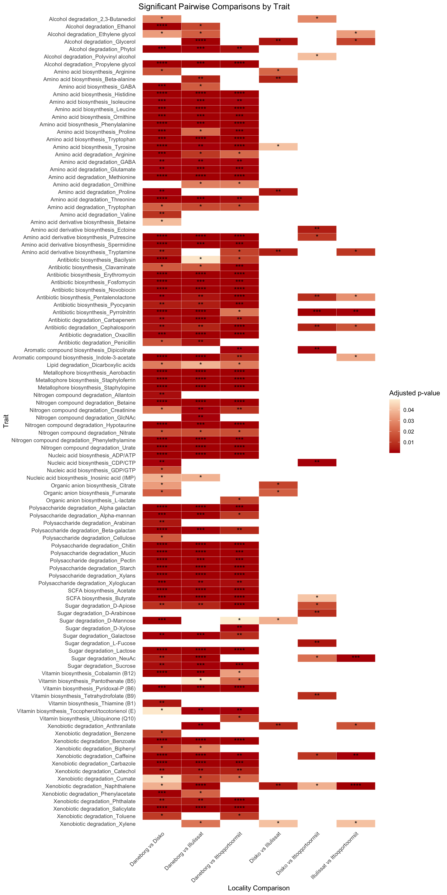
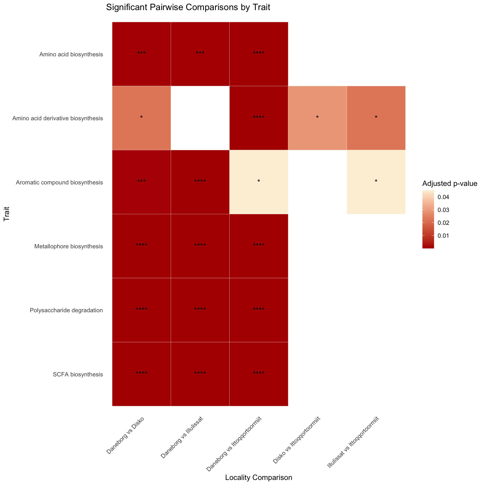

Chapter 10 top 10
for (c in unique_contrasts) {
locs <- str_split(c, " vs ", simplify = TRUE)
title <- paste(locs[2], " - ", locs[1])
subset_data <- plot_data %>%
group_by(contrast) %>%
filter(lfc > 0) %>%
slice_max(order_by = lfc, n = 10) %>%
bind_rows(
plot_data %>%
group_by(contrast) %>%
filter(lfc < 0) %>%
slice_min(order_by = lfc, n = 10)
) %>%
ungroup() %>%
filter(contrast == c) %>%
arrange(direction, lfc) %>%
mutate(taxon_ordered = factor(taxon, levels = unique(taxon)))
tax_color <- as.data.frame(unique(subset_data$phylum)) %>%
rename(phylum = 1) %>%
left_join(., colors_alphabetic, by = "phylum") %>%
dplyr::arrange(phylum) %>%
dplyr::select(colors) %>%
pull()
p <- ggplot(subset_data, aes(x = taxon_ordered, y = lfc, fill = phylum)) +
geom_bar(stat = "identity") +
coord_flip() +
theme(
panel.background = element_blank(),
axis.line = element_line(size = 0.5, linetype = "solid", colour = "black"),
axis.text.x = element_text(size = 12),
axis.text.y = element_text(size = 12),
axis.title = element_text(size = 14, face = "bold"),
legend.text = element_text(size = 12),
legend.title = element_text(size = 14, face = "bold"),
legend.position = "right",
legend.box = "vertical",
plot.title = element_text(size = 18, face = "bold")
) +
scale_fill_manual(values = tax_color) +
labs(
title = title,
x = "Taxa",
y = "Log-Fold Change",
fill = "Phylum"
)
ggsave(paste0("Fig_top10_", gsub(" ", "_", c), ".png"), plot = p, width = 8, height = 12, dpi = 300)
}10.0.1 Phylum level
# Get log-fold change and q-value columns
lfc_cols <- grep("^lfc_", colnames(res_pair_phylum), value = TRUE)
q_cols <- gsub("^lfc_", "q_", lfc_cols)
# Build long table by pairing lfc and q for each contrast
plot_data_phylum <- lfc_cols %>%
setNames(nm = .) %>%
purrr::imap_dfr(function(lfc_col, name) {
q_col <- gsub("^lfc_", "q_", lfc_col)
res_pair_phylum %>%
select(taxon, !!lfc_col, !!q_col) %>%
rename(
lfc = !!lfc_col,
q = !!q_col
) %>%
mutate(contrast_key = name)
}) %>%
filter(!is.na(lfc), !is.na(q), q < 0.05) %>%
mutate(
# Manually re-label contrasts for clarity
contrast = case_when(
contrast_key == "lfc_localityDisko" ~ "Disko vs Daneborg",
contrast_key == "lfc_localityIllulissat" ~ "Illulissat vs Daneborg",
contrast_key == "lfc_localityIttoqqortoormiit" ~ "Ittoqqortoormiit vs Daneborg",
contrast_key == "lfc_localityMongolia" ~ "Mongolia vs Daneborg",
contrast_key == "lfc_localityIllulissat_localityDisko" ~ "Illulissat vs Disko",
contrast_key == "lfc_localityMongolia_localityDisko" ~ "Mongolia vs Disko",
contrast_key == "lfc_localityIttoqqortoormiit_localityDisko" ~ "Ittoqqortoormiit vs Disko",
contrast_key == "lfc_localityIttoqqortoormiit_localityIllulissat" ~ "Ittoqqortoormiit vs Illulissat",
contrast_key == "lfc_localityMongolia_localityIllulissat" ~ "Mongolia vs Illulissat",
contrast_key == "lfc_localityMongolia_localityIttoqqortoormiit" ~ "Mongolia vs Ittoqqortoormiit",
TRUE ~ contrast_key
),
direction = ifelse(lfc > 0, paste("Enriched in", sub(" vs.*", "", contrast)),
paste("Enriched in", sub(".*vs ", "", contrast)))
)# Loop through each contrast
unique_contrasts <- unique(plot_data_phylum$contrast)
taxonomy <- data.frame(physeq_genome_filtered@tax_table) %>%
rownames_to_column(., "taxon")
colors_alphabetic <- read_tsv("https://raw.githubusercontent.com/earthhologenome/EHI_taxonomy_colour/main/ehi_phylum_colors.tsv") %>%
mutate_at(vars(phylum), ~ str_replace(., "[dpcofgs]__", "")) %>%
right_join(taxonomy, by=join_by(phylum == phylum)) %>%
dplyr::select(phylum, colors) %>%
mutate(colors = str_c(colors, "80")) %>% #add 80% alpha
unique() %>%
dplyr::arrange(phylum)
for (c in unique_contrasts) {
locs <- str_split(c, " vs ", simplify = TRUE)
title <- paste(locs[2], " - ", locs[1])#
subset_data_phylum <- plot_data_phylum %>%
filter(contrast == c) %>%
arrange(direction, lfc) %>%
mutate(taxon_ordered = factor(taxon, levels = unique(taxon)))
tax_color <- as.data.frame(unique(subset_data_phylum$taxon)) %>%
rename(phylum = 1) %>%
left_join(., colors_alphabetic, by = "phylum") %>%
dplyr::arrange(phylum) %>%
dplyr::select(colors) %>%
pull()
p <- ggplot(subset_data_phylum, aes(x = taxon_ordered, y = lfc, fill = taxon)) +
geom_bar(stat = "identity", show.legend = FALSE) +
coord_flip() +
theme(
panel.background = element_blank(),
axis.line = element_line(
size = 0.5,
linetype = "solid",
colour = "black"
),
axis.text.x = element_text(size = 12),
axis.text.y = element_text(size = 12),
axis.title = element_text(size = 14, face = "bold"),
legend.text = element_blank(),
legend.title = element_blank(),
plot.title = element_text(size = 18, face = "bold", hjust = 0.5)
) +
scale_fill_manual(values = tax_color) +
labs(
title = title,
x = "Taxa",
y = "Log-Fold Change",
)
ggsave(paste0("Fig_phylum_", gsub(" ", "_", c), ".png"), plot = p, width = 6, height = 8, dpi = 300)
}10.0.2 Genus level
save(ancom_rand_output_mag,
ancom_rand_output_phylum,
ancom_rand_output_genus,
file = "data/ancombc_results.Rdata") #ancombc_results_wolves.Rdata# Get log-fold change and q-value columns
lfc_cols <- grep("^lfc_", colnames(res_pair_genus), value = TRUE)
q_cols <- gsub("^lfc_", "q_", lfc_cols)
# Build long table by pairing lfc and q for each contrast
plot_data_genus <- lfc_cols %>%
setNames(nm = .) %>%
purrr::imap_dfr(function(lfc_col, name) {
q_col <- gsub("^lfc_", "q_", lfc_col)
res_pair_genus %>%
select(taxon, !!lfc_col, !!q_col) %>%
rename(
lfc = !!lfc_col,
q = !!q_col
) %>%
mutate(contrast_key = name)
}) %>%
filter(!is.na(lfc), !is.na(q), q < 0.05) %>%
mutate(
# Manually re-label contrasts for clarity
contrast = case_when(
contrast_key == "lfc_localityDisko" ~ "Disko vs Daneborg",
contrast_key == "lfc_localityIllulissat" ~ "Illulissat vs Daneborg",
contrast_key == "lfc_localityIttoqqortoormiit" ~ "Ittoqqortoormiit vs Daneborg",
contrast_key == "lfc_localityMongolia" ~ "Mongolia vs Daneborg",
contrast_key == "lfc_localityIllulissat_localityDisko" ~ "Illulissat vs Disko",
contrast_key == "lfc_localityMongolia_localityDisko" ~ "Mongolia vs Disko",
contrast_key == "lfc_localityIttoqqortoormiit_localityDisko" ~ "Ittoqqortoormiit vs Disko",
contrast_key == "lfc_localityIttoqqortoormiit_localityIllulissat" ~ "Ittoqqortoormiit vs Illulissat",
contrast_key == "lfc_localityMongolia_localityIllulissat" ~ "Mongolia vs Illulissat",
contrast_key == "lfc_localityMongolia_localityIttoqqortoormiit" ~ "Mongolia vs Ittoqqortoormiit",
TRUE ~ contrast_key
),
direction = ifelse(lfc > 0, paste("Enriched in", sub(" vs.*", "", contrast)),
paste("Enriched in", sub(".*vs ", "", contrast)))
)plot_data_genus <- plot_data_genus %>%
mutate(taxon_clean = sub(".*:", "", taxon)) %>%
left_join(., genome_metadata %>% select(genus, family, phylum) %>% distinct(), by =join_by("taxon_clean"=="genus"))%>%
left_join(., genome_metadata %>% select(family, phylum)%>% distinct(), by =join_by("taxon_clean"=="family")) %>%
mutate(phylum.x = coalesce(phylum.x, phylum.y)) %>%
select(-family,-phylum.y) %>%
rename(phylum=phylum.x)# Loop through each contrast
unique_contrasts <- unique(plot_data_genus$contrast)
taxonomy <- data.frame(physeq_genome_filtered@tax_table) %>%
rownames_to_column(., "taxon")
colors_alphabetic <- read_tsv("https://raw.githubusercontent.com/earthhologenome/EHI_taxonomy_colour/main/ehi_phylum_colors.tsv") %>%
mutate_at(vars(phylum), ~ str_replace(., "[dpcofgs]__", "")) %>%
right_join(taxonomy, by=join_by(phylum == phylum)) %>%
dplyr::select(phylum, colors) %>%
mutate(colors = str_c(colors, "80")) %>% #add 80% alpha
unique() %>%
dplyr::arrange(phylum)
for (c in unique_contrasts) {
locs <- str_split(c, " vs ", simplify = TRUE)
titulu <- paste(locs[2], " - ", locs[1])
subset_data_genus <- plot_data_genus %>%
filter(contrast == c) %>%
arrange(direction, lfc)
# %>% mutate(taxon_ordered = factor(taxon_clean, levels = unique(taxon_clean)))
tax_color <- as.data.frame(unique(subset_data_genus$phylum)) %>%
rename(phylum=1) %>%
left_join(., colors_alphabetic, by="phylum")%>%
dplyr::arrange(phylum) %>%
dplyr::select(colors) %>%
pull()
p <- ggplot(subset_data_genus, aes(x=lfc, y=forcats::fct_reorder(taxon_clean,lfc), fill=phylum)) +
geom_bar(stat = "identity") +
# coord_flip() +
theme(panel.background = element_blank(),
axis.line = element_line(size = 0.5, linetype = "solid", colour = "black"),
axis.text.x = element_text(size = 12),
axis.text.y = element_text(size = 8),
axis.title = element_text(size = 12, face = "bold"),
legend.text = element_text(size = 12),
legend.title = element_text(size = 14, face = "bold"),
legend.position = "right", legend.box = "vertical",
plot.title = element_text(size = 16, face = "bold", hjust = 0.5))+
scale_fill_manual(values=tax_color) +
labs(
title = titulu,
x = "Taxa",
y = "Log-Fold Change",
fill = "Direction"
)
ggsave(paste0("Fig_genus_", gsub(" ", "_", c), ".png"), plot = p, width = 6, height = 10, dpi = 300)
}# Loop through each contrast
plot_data_genus <- lfc_cols %>%
setNames(nm = .) %>%
purrr::imap_dfr(function(lfc_col, name) {
q_col <- gsub("^lfc_", "q_", lfc_col)
res_pair_genus %>%
select(taxon, !!lfc_col, !!q_col) %>%
rename(
lfc = !!lfc_col,
q = !!q_col
) %>%
mutate(contrast_key = name)
}) %>%
filter(!is.na(lfc), !is.na(q), q < 0.05) %>%
mutate(
# Manually re-label contrasts for clarity
contrast = case_when(
contrast_key == "lfc_localityDisko" ~ "Disko vs Daneborg",
contrast_key == "lfc_localityIllulissat" ~ "Illulissat vs Daneborg",
contrast_key == "lfc_localityIttoqqortoormiit" ~ "Ittoqqortoormiit vs Daneborg",
contrast_key == "lfc_localityMongolia" ~ "Mongolia vs Daneborg",
contrast_key == "lfc_localityIllulissat_localityDisko" ~ "Illulissat vs Disko",
contrast_key == "lfc_localityMongolia_localityDisko" ~ "Mongolia vs Disko",
contrast_key == "lfc_localityIttoqqortoormiit_localityDisko" ~ "Ittoqqortoormiit vs Disko",
contrast_key == "lfc_localityIttoqqortoormiit_localityIllulissat" ~ "Ittoqqortoormiit vs Illulissat",
contrast_key == "lfc_localityMongolia_localityIllulissat" ~ "Mongolia vs Illulissat",
contrast_key == "lfc_localityMongolia_localityIttoqqortoormiit" ~ "Mongolia vs Ittoqqortoormiit",
TRUE ~ contrast_key
),
direction = ifelse(lfc > 0, paste("Enriched in", sub(" vs.*", "", contrast)),
paste("Enriched in", sub(".*vs ", "", contrast)))
)
plot_data_genusF <- plot_data_genus %>%
mutate(taxon_clean = sub(".*:", "", taxon)) %>%
left_join(., genome_metadata %>% select(genus, class, phylum) %>% distinct(), by =join_by("taxon_clean"=="genus"))%>%
left_join(., genome_metadata %>% select(family, class, phylum)%>% distinct(), by =join_by("taxon_clean"=="family")) %>%
mutate(class.x = coalesce(class.x, class.y)) %>%
select(-class.y) %>%
rename(class=class.x)
unique_contrasts <- unique(plot_data_genus$contrast)
# taxonomy <- data.frame(physeq_genome_filtered@tax_table) %>%
# rownames_to_column(., "taxon")
# colors_alphabetic <- read_tsv("https://raw.githubusercontent.com/earthhologenome/EHI_taxonomy_colour/main/ehi_phylum_colors.tsv") %>%
# mutate_at(vars(phylum), ~ str_replace(., "[dpcofgs]__", "")) %>%
# right_join(taxonomy, by=join_by(phylum == phylum)) %>%
# dplyr::select(phylum, colors) %>%
# mutate(colors = str_c(colors, "80")) %>% #add 80% alpha
# unique() %>%
# dplyr::arrange(phylum)
for (c in unique_contrasts) {
locs <- str_split(c, " vs ", simplify = TRUE)
titulu <- paste(locs[2], " - ", locs[1])
subset_data_genusF <- plot_data_genusF %>%
filter(contrast == c) %>%
arrange(direction, lfc)
# %>% mutate(taxon_ordered = factor(taxon_clean, levels = unique(taxon_clean)))
# tax_color <- as.data.frame(unique(subset_data_genus$phylum)) %>%
# rename(phylum=1) %>%
# left_join(., colors_alphabetic, by="phylum")%>%
# dplyr::arrange(phylum) %>%
# dplyr::select(colors) %>%
# pull()
p_f <- ggplot(subset_data_genusF, aes(x=lfc, y=forcats::fct_reorder(taxon_clean,lfc), fill=class)) +
geom_bar(stat = "identity") +
# coord_flip() +
theme(panel.background = element_blank(),
axis.line = element_line(size = 0.5, linetype = "solid", colour = "black"),
axis.text.x = element_text(size = 12),
axis.text.y = element_text(size = 10),
axis.title = element_text(size = 12, face = "bold"),
legend.text = element_text(size = 12),
legend.title = element_text(size = 14, face = "bold"),
legend.position = "right", legend.box = "vertical",
plot.title = element_text(size = 16, face = "bold", hjust = 0.5))+
scale_fill_discrete()+
labs(
title = titulu,
x = "Taxa",
y = "Log-Fold Change",
fill = "Faily"
)
ggsave(paste0("Fig_genus_color_family_", gsub(" ", "_", c), ".png"), plot = p_f, width = 10, height = 20, dpi = 300)
}10.2 Groups MCI
GIFTs_functions_community %>%
rowMeans() %>%
as_tibble(., rownames = "sample") %>%
left_join(sample_metadata, by = join_by(sample == sample)) %>%
# filter(time_point=="0_Wild") %>%
group_by(locality) %>%
summarise(MCI = mean(value), sd = sd(value)) %>%
tt()| locality | MCI | sd |
|---|---|---|
| Daneborg | 0.3613817 | 0.003219451 |
| Disko | 0.3618705 | 0.007201916 |
| Illulissat | 0.3636198 | 0.003564632 |
| Ittoqqortoormiit | 0.3649810 | 0.014306168 |
MCI <- GIFTs_functions_community %>%
rowMeans() %>%
as_tibble(., rownames = "sample") %>%
left_join(sample_metadata, by = join_by(sample == sample))
shapiro.test(MCI$value)##
## Shapiro-Wilk normality test
##
## data: MCI$value
## W = 0.75702, p-value = 4.793e-13##
## Kruskal-Wallis rank sum test
##
## data: value by locality
## Kruskal-Wallis chi-squared = 5.536, df = 3, p-value = 0.136510.3 Community elements differences:
ggplot(pairwise_results, aes(x = comparison, y = fct_rev(Function))) +
geom_tile(aes(fill = p.adj), color = "white") +
geom_text(aes(label = p.adj.signif), size = 4, color = "black") +
scale_fill_gradient(low = "#b30000", high = "#fef0d9" , name = "Adjusted p-value") +
theme_minimal() +
labs(
title = "Significant Pairwise Comparisons by Trait",
x = "Locality Comparison",
y = "Trait"
) +
theme(
axis.text.x = element_text(angle = 45, hjust = 1),
panel.grid = element_blank()
)
10.4 Community function differences:
ggplot(pairwise_results_func, aes(x = comparison, y = fct_rev(Function))) +
geom_tile(aes(fill = p.adj), color = "white") +
geom_text(aes(label = p.adj.signif), size = 4, color = "black") +
scale_fill_gradient(low = "#b30000", high = "#fef0d9" , name = "Adjusted p-value") +
theme_minimal() +
labs(
title = "Significant Pairwise Comparisons by Trait",
x = "Locality Comparison",
y = "Trait"
) +
theme(
axis.text.x = element_text(angle = 45, hjust = 1),
panel.grid = element_blank()
)
10.4.1 With wolves
load("data/data.Rdata")
load("data/beta_greenland_wolves.Rdata")
sample_metadata <- read_csv("data/sample_metadata.csv")
sample_metadata <- sample_metadata %>%
filter(country== "Greenland" | breed == "Wolf")
sample_metadata$individual <- sub("[0-9]{2}$", "", sample_metadata$animal)
sample_metadata_illu <- read_csv("data/metadata_illu.csv")
sample_metadata <- sample_metadata %>%
left_join(sample_metadata_illu[c(1,4,9)], by=join_by("sample"=="DogID")) %>%
filter(!Samples %in% c("Blank","Saliva")) %>%
filter(individual!="GL_02_") %>%
filter(season!="winter")
genome_counts_filt <- genome_counts_filt %>%
select(one_of(c("genome",sample_metadata$sample)))%>%
filter(rowSums(. != 0, na.rm = TRUE) > 0) %>%
select_if(~!all(. == 0))
genome_metadata <- genome_metadata %>%
semi_join(., genome_counts_filt, by = "genome") %>%
arrange(match(genome,genome_counts_filt$genome))
genome_tree <- keep.tip(genome_tree, tip=genome_metadata$genome)Neutral

sample_metadata_row<- column_to_rownames(sample_metadata, "sample")
sample_metadata_row <- sample_metadata_row[labels(beta_q1n$S), ]
betadisper(beta_q1n$S, sample_metadata_row$locality) %>% permutest(., pairwise = TRUE)
Permutation test for homogeneity of multivariate dispersions
Permutation: free
Number of permutations: 999
Response: Distances
Df Sum Sq Mean Sq F N.Perm Pr(>F)
Groups 4 0.3703 0.092576 8.001 999 0.001 ***
Residuals 126 1.4579 0.011571
---
Signif. codes: 0 '***' 0.001 '**' 0.01 '*' 0.05 '.' 0.1 ' ' 1
Pairwise comparisons:
(Observed p-value below diagonal, permuted p-value above diagonal)
Daneborg Disko Illulissat Ittoqqortoormiit Mongolia
Daneborg 4.0000e-03 2.2500e-01 1.0000e-03 0.054
Disko 2.5276e-03 6.1000e-02 1.1000e-02 0.723
Illulissat 2.1374e-01 6.5615e-02 1.0000e-03 0.096
Ittoqqortoormiit 1.0276e-05 1.3075e-02 1.9819e-04 0.263
Mongolia 5.7981e-02 7.4099e-01 1.1248e-01 2.7849e-01 adonis2(beta_q1n$S ~ locality,
data = sample_metadata %>% arrange(match(sample,labels(beta_q1n$S))),
permutations = 999, by="terms") %>%
broom::tidy() %>%
tt()| term | df | SumOfSqs | R2 | statistic | p.value |
|---|---|---|---|---|---|
| locality | 4 | 4.028089 | 0.2573208 | 10.91401 | 0.001 |
| Residual | 126 | 11.625868 | 0.7426792 | NA | NA |
| Total | 130 | 15.653957 | 1.0000000 | NA | NA |
pairs Df SumsOfSqs F.Model R2 p.value
1 Daneborg vs Disko 1 2.0141969 25.463759 0.26673744 0.001
2 Daneborg vs Illulissat 1 1.4384669 23.686570 0.32145030 0.001
3 Daneborg vs Ittoqqortoormiit 1 1.4949672 15.128293 0.21269023 0.001
4 Daneborg vs Mongolia 1 0.9660845 14.541670 0.29957086 0.001
5 Disko vs Illulissat 1 0.2207961 2.610421 0.03918938 0.011
6 Disko vs Ittoqqortoormiit 1 0.5283427 4.675183 0.06260692 0.001
7 Disko vs Mongolia 1 0.9770179 10.116602 0.17407421 0.001
8 Illulissat vs Ittoqqortoormiit 1 0.4332439 4.004008 0.07414279 0.001
9 Illulissat vs Mongolia 1 0.9431293 12.368577 0.30639120 0.001
10 Ittoqqortoormiit vs Mongolia 1 0.9467617 6.948745 0.16969371 0.001
p.adjusted sig
1 0.01 *
2 0.01 *
3 0.01 *
4 0.01 *
5 0.11
6 0.01 *
7 0.01 *
8 0.01 *
9 0.01 *
10 0.01 *